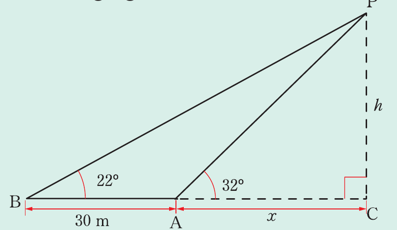

Example 8.26
From point A, Fatuma observes the angle of elevation of the top of a church tower to be 32°. Moving 30 m further away to point B on the same horizontal level as the bottom of the tower C, she observes the angle of elevation to be 22°. Find the distance AC and the height of the tower.
Solution
Present the information as shown in the following figure.

Let be the height of the tower and be the distance as shown in the figure. It follows that,
Similarly,
Equating equations (i) and (ii) gives,
Substituting the value of in equation (i) gives,
Therefore, the distance is 54.88 m and the height of the tower is 34.29 m.